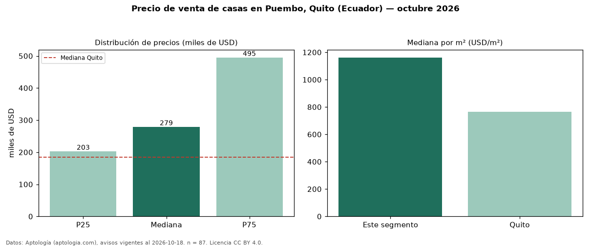

Precio de venta de casas en Puembo, Quito (Ecuador) — octubre 2026
USD 279.000 es el precio mediano de casas en venta en Puembo, Quito (Ecuador) (n = 87 avisos). Frente a la mediana de Quito para casas (USD 185.000), queda 51 % por encima. Por metro cuadrado, la mediana es USD 1.162/m² (n = 81 avisos con área), 52 % por encima de Quito (USD 765/m²). El área mediana anunciada es 240 m². La mitad central de los avisos va de USD 202.694 a USD 495.000 (razón 2,4), una dispersión alta. El segmento con más oferta es el de 3 o más habitaciones (83 avisos, mediana USD 270.000). Por precio mediano es el puesto 4 de 18 sectores de Quito con al menos 30 avisos de casas en venta (USD): en la franja media. Datos: Aptología (aptologia.com), CC BY 4.0 — https://www.aptologia.com/ec/venta/quito. Archivos: PDF, CSV con las cifras y gráfica PNG.

| Avisos únicos | 87 |
|---|---|
| Percentil 25 | COP 202.694 |
| Mediana | COP 279.000 |
| Percentil 75 | COP 495.000 |
| Mediana por m² | COP 1.161 |
Fuente: avisos vigentes de portales inmobiliarios recopilados por Aptología, deduplicados (mínimo 30 avisos únicos por celda). Precios pedidos, no cerrados. Fecha: 2026-10-18.